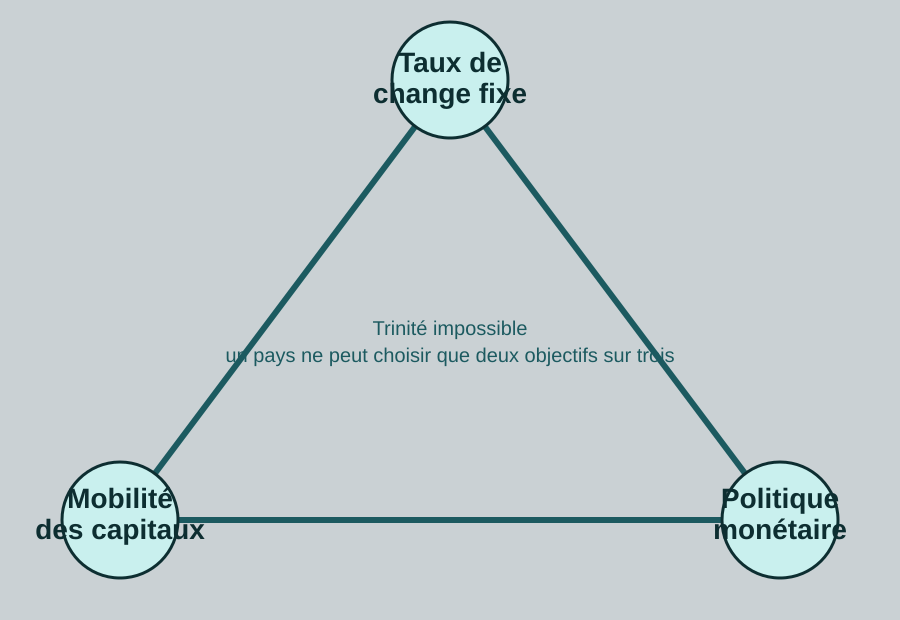

Lorsqu'on évoque les « crises financières », les « déséquilibres commerciaux » ou encore la « guerre des monnaies », on parle en réalité des symptômes visibles d'un système bien plus profond : le système monétaire international (SMI). Invisible pour la plupart d'entre nous, il façonne pourtant les règles du jeu économique mondial, détermine qui gagne et qui perd dans le commerce international, et conditionne la stabilité — ou l'instabilité — de nos économies.
Comprendre le SMI, c'est comprendre pourquoi certains pays accumulent des réserves de change astronomiques tandis que d'autres sont perpétuellement endettés, pourquoi les taux de change fluctuent brutalement, et pourquoi la coopération monétaire internationale ressemble davantage à un champ de bataille qu'à un espace de dialogue constructif.
Cet article est le premier d'une série de quatre volets qui vous propose de décrypter les enjeux du système monétaire international, depuis ses fondements théoriques jusqu'à une proposition radicale de refonte : le système NEMO IMS (NEgentropic MOney International Monetary System), que je développe dans mon ouvrage L'Économie de l'Équilibre.
Définition et nature du SMI
Un système monétaire international est l'ensemble des règles, institutions et mécanismes qui régissent les échanges monétaires et financiers entre les pays. Il définit comment les monnaies nationales interagissent entre elles, comment les déséquilibres commerciaux sont financés, et quelles sont les contraintes qui pèsent sur les politiques économiques des États.
Contrairement à ce que son nom pourrait laisser croire, le SMI n'est pas une simple convention technique réservée aux banquiers centraux. C'est une infrastructure politique et économique qui reflète les rapports de force géopolitiques, les intérêts nationaux divergents et les compromis historiques entre puissances.
Le SMI actuel, hérité des accords de Bretton Woods (1944) et de leur effondrement progressif dans les années 1970, repose sur trois piliers fondamentaux.
Les quatre piliers du SMI
1. La convertibilité des monnaies
La convertibilité détermine dans quelle mesure une monnaie peut être échangée librement contre d'autres devises ou contre des actifs internationaux. Une monnaie pleinement convertible peut circuler sans restriction sur les marchés de change, tandis qu'une monnaie non convertible reste enfermée dans les frontières de son pays d'émission.
Cette question est loin d'être anodine : elle conditionne la capacité d'un pays à attirer des capitaux étrangers, à financer ses importations et à jouer un rôle dans le commerce international. Les pays émergents, en particulier, se heurtent souvent au « péché originel » monétaire : incapables d'emprunter dans leur propre monnaie sur les marchés internationaux, ils doivent s'endetter en dollars ou en euros, ce qui les rend vulnérables aux fluctuations de change et aux crises de liquidité.
2. Les régimes de change
Le régime de change définit la manière dont le taux de change d'une monnaie est déterminé vis-à-vis des autres devises. On distingue schématiquement trois grandes catégories :
Les changes fixes : le taux de change est ancré à une devise de référence (souvent le dollar) ou à un panier de monnaies. L'avantage est la prévisibilité pour les agents économiques ; l'inconvénient est la perte d'autonomie monétaire et la vulnérabilité aux attaques spéculatives.
Les changes flottants : le taux de change est déterminé par l'offre et la demande sur le marché des changes. Ce régime offre une flexibilité maximale, mais expose à une volatilité parfois brutale.
Les changes intermédiaires : systèmes de flottement dirigé, bandes de fluctuation, ancrage glissant… Des solutions hybrides qui tentent de concilier stabilité et flexibilité, mais qui se révèlent souvent difficiles à tenir sur le long terme.
3. La liquidité internationale
Pour commercer avec l'étranger, les pays ont besoin de liquidités internationales — c'est-à-dire de moyens de paiement acceptés au-delà de leurs frontières. Historiquement, cette fonction a été remplie par l'or, puis par des monnaies nationales érigées en monnaies de réserve (la livre sterling au XIXe siècle, le dollar américain depuis 1945).
Aujourd'hui, le dollar domine largement : il représente environ 60 % des réserves de change mondiales et sert de devise de facturation pour la majorité des échanges internationaux, y compris pour des transactions qui n'impliquent pas les États-Unis. Cette situation confère à Washington un pouvoir économique et géopolitique considérable — ce qu'on appelle le « privilège exorbitant » du dollar.
Le Fonds monétaire international (FMI) a tenté de créer une alternative avec les Droits de tirage spéciaux (DTS), un actif de réserve international composé d'un panier de devises. Mais les DTS n'ont jamais vraiment décollé et restent marginaux dans le système monétaire mondial.
4. Les mécanismes d'ajustement et de surveillance
Lorsqu'un pays accumule un déficit commercial chronique ou voit sa monnaie attaquée sur les marchés, comment rétablit-on l'équilibre ? Les mécanismes d'ajustement sont les processus — automatiques ou négociés — qui permettent de corriger les déséquilibres.
Dans le système actuel, cet ajustement repose principalement sur les variations de taux de change (pour les pays en change flottant) ou sur des politiques d'austérité imposées par le FMI (pour les pays en difficulté). Mais ces mécanismes sont souvent asymétriques : les pays excédentaires (comme l'Allemagne ou la Chine) ne subissent aucune pression pour rééquilibrer leurs comptes, tandis que les pays déficitaires sont contraints d'ajuster par la récession.
Le FMI et la Banque mondiale jouent un rôle de surveillance et de coordination, mais leur légitimité est contestée, notamment en raison de la sur-représentation des pays occidentaux dans leur gouvernance.
Le Triangle de Mundell ou « Trinité Impossible »
Le fonctionnement d'un SMI est limité par un dilemme économique majeur, formalisé par l'économiste canadien Robert Mundell (Prix Nobel 1999) : le triangle d'incompatibilité, aussi appelé « trinité impossible » ou « trilemme de Mundell ».

Le triangle de Mundell illustre qu'un pays ne peut atteindre simultanément que deux des trois objectifs : taux de change fixe, mobilité des capitaux, et politique monétaire autonome.
Selon ce triangle, un pays ne peut atteindre simultanément que deux des trois objectifs suivants :
Taux de change fixe : stabilité de la valeur de la monnaie nationale par rapport à une devise de référence (ou à l'or).
Libre circulation des capitaux : absence de contrôle sur les mouvements de fonds entrants et sortants.
Politique monétaire autonome : capacité de la banque centrale à fixer ses taux d'intérêt de manière indépendante pour répondre aux besoins de l'économie nationale.
Chaque combinaison implique un sacrifice :
Taux fixe + libre circulation = perte d'autonomie monétaire (exemple : zone euro). Les pays membres de la zone euro ont renoncé à leur politique monétaire nationale au profit d'une monnaie unique. En contrepartie, ils bénéficient de la stabilité des taux de change intra-zone et de la libre circulation des capitaux. Mais ils ne peuvent plus ajuster les taux d'intérêt pour répondre à leurs besoins spécifiques.
Libre circulation + autonomie monétaire = change flottant (exemple : États-Unis, Japon). Ces pays acceptent la volatilité de leur taux de change en échange de la flexibilité offerte par une politique monétaire indépendante et une ouverture financière totale.
Taux fixe + autonomie monétaire = contrôle des capitaux (exemple : Chine avant les années 2000). Pour maintenir un taux de change stable tout en conservant la maîtrise de sa politique monétaire, la Chine a longtemps imposé des restrictions strictes sur les flux de capitaux.
Le trilemme de Mundell n'est pas qu'une curiosité théorique : il structure les choix stratégiques de tous les pays et explique pourquoi il n'existe pas de « solution optimale » universelle en matière de régime monétaire.
Conclusion : un système en tension permanente
Le système monétaire international actuel est un assemblage fragile de compromis historiques, de rapports de force géopolitiques et de contraintes structurelles incarnées par le triangle de Mundell. Il repose sur un dollar omniprésent, des régimes de change hétérogènes, et des institutions de gouvernance contestées.
Mais au-delà de ses dysfonctionnements techniques, le SMI souffre d'un problème plus fondamental : il est déconnecté des limites planétaires. Aucun mécanisme n'incite à la préservation des ressources naturelles, à la réduction des émissions de CO₂, ou à la régénération des écosystèmes. Au contraire, le système actuel amplifie les logiques extractivistes et consuméristes qui nous mènent droit dans le mur écologique.
Dans les prochains articles de cette série, nous explorerons les dilemmes concrets du SMI actuel (Article 2), son histoire mouvementée depuis le XIXe siècle (Article 3), et enfin la proposition que je développe dans L'Économie de l'Équilibre : le système NEMO IMS, un système monétaire international ancré dans la régénération des systèmes vivants plutôt que dans la dette et l'extraction (Article 4).
Car si le triangle de Mundell nous enseigne qu'on ne peut pas tout avoir en même temps, il ne nous dit rien sur ce que nous devrions vouloir. Et c'est précisément là que commence le débat politique.
Article 2 : Les dilemmes structurels du SMI →
Jean-Christophe Duval